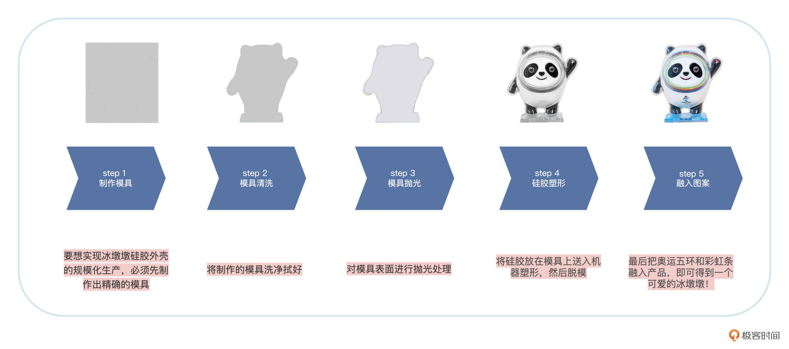
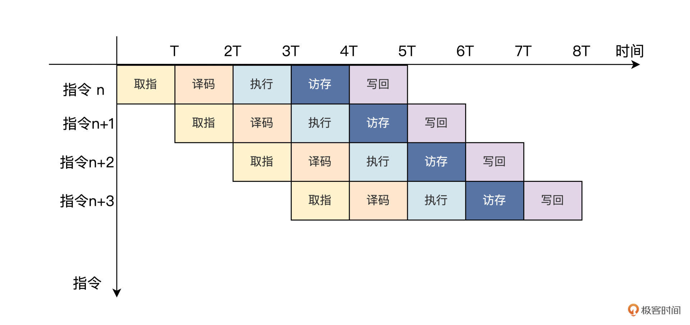
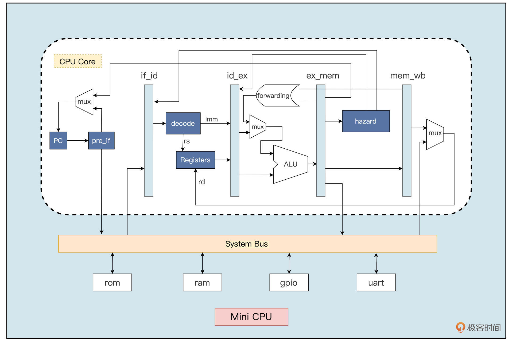
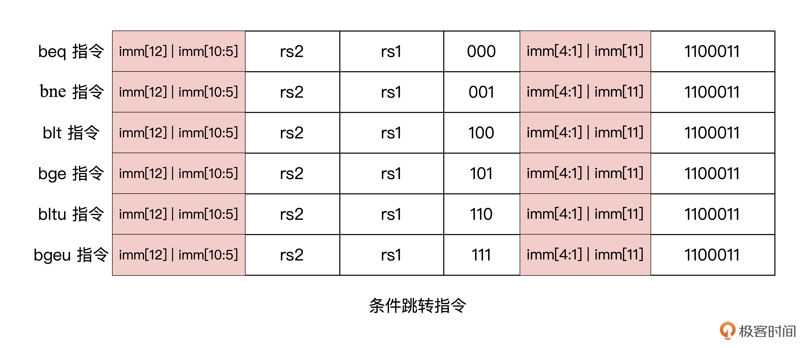
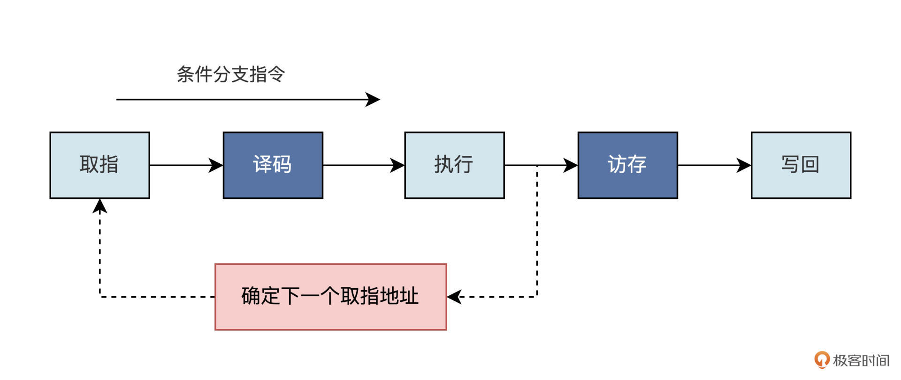
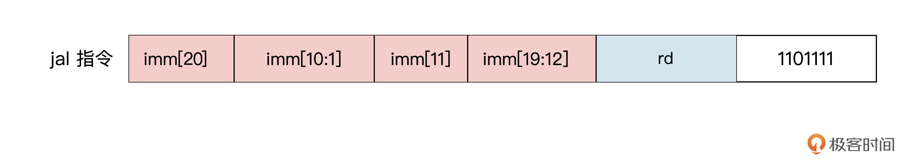
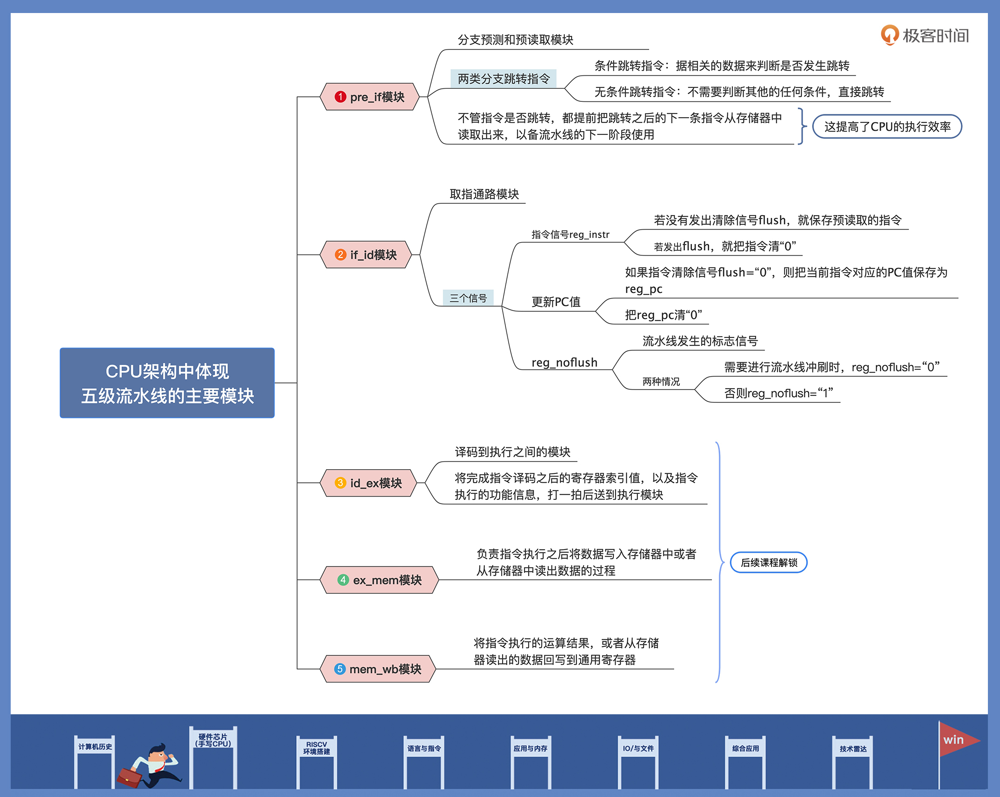

- 00 开篇词 练好基本功，优秀工程师成长第一步.md.html
- 01 CISC & RISC：从何而来，何至于此.md.html
- 02 RISC特性与发展：RISC-V凭什么成为“半导体行业的Linux”？.md.html
- 03 硬件语言筑基（一）：从硬件语言开启手写CPU之旅.md.html
- 04 硬件语言筑基（二）_ 代码是怎么生成具体电路的？.md.html
- 05 指令架构：RISC-V在CPU设计上到底有哪些优势？.md.html
- 06 手写CPU（一）：迷你CPU架构设计与取指令实现.md.html
- 07 手写CPU（二）：如何实现指令译码模块？.md.html
- 08 手写CPU（三）：如何实现指令执行模块？.md.html
- 09 手写CPU（四）：如何实现CPU流水线的访存阶段？.md.html
- 10 手写CPU（五）：CPU流水线的写回模块如何实现？.md.html
- 11 手写CPU（六）：如何让我们的CPU跑起来？.md.html
- 12 QEMU：支持RISC-V的QEMU如何构建？.md.html
- 13 小试牛刀：跑通RISC-V平台的Hello World程序.md.html
- 14 走进C语言：高级语言怎样抽象执行逻辑？.md.html
- 15 C与汇编：揭秘C语言编译器的“搬砖”日常.md.html
- 16 RISC-V指令精讲（一）：算术指令实现与调试.md.html
- 17 RISC-V指令精讲（二）：算术指令实现与调试.md.html
- 18 RISC-V指令精讲（三）：跳转指令实现与调试.md.html
- 19 RISC-V指令精讲（四）：跳转指令实现与调试.md.html
- 20 RISC-V指令精讲（五）：原子指令实现与调试.md.html
- 21 RISC-V指令精讲（六）：加载指令实现与调试.md.html
- 22 RISC-V指令精讲（七）：访存指令实现与调试.md.html
- 23 内存地址空间：程序中地址的三种产生方式.md.html
- 24 虚实结合：虚拟内存和物理内存.md.html
- 25 堆&栈：堆与栈的区别和应用.md.html
- 26 延迟分配：提高内存利用率的三种机制.md.html
- 27 应用内存管理：Linux的应用与内存管理.md.html
- 28 进程调度：应用为什么能并行执行？.md.html
- 29 应用间通信（一）：详解Linux进程IPC.md.html
- 30 应用间通信（二）：详解Linux进程IPC.md.html
- 31 外设通信：IO Cache与IO调度.md.html
- 32 IO管理：Linux如何管理多个外设？.md.html
- 33 lotop与lostat命令：聊聊命令背后的故事与工作原理.md.html
- 34 文件仓库：初识文件与文件系统.md.html
- 35 Linux文件系统（一）：Linux如何存放文件？.md.html
- 36 Linux文件系统（二）：Linux如何存放文件？.md.html
- 37 浏览器原理（一）：浏览器为什么要用多进程模型？.md.html
- 38 浏览器原理（二）：浏览器进程通信与网络渲染详解.md.html
- 39 源码解读：V8 执行 JS 代码的全过程.md.html
- 40 内功心法（一）：内核和后端通用的设计思想有哪些？.md.html
- 41 内功心法（二）：内核和后端通用的设计思想有哪些？.md.html
- 42 性能调优：性能调优工具eBPF和调优方法.md.html
- 先睹为快：迷你CPU项目效果演示.md.html
- 加餐01 云计算基础：自己动手搭建一款IAAS虚拟化平台.md.html
- 加餐02 学习攻略（一）：大数据&云计算，究竟怎么学？.md.html
- 加餐03 学习攻略（二）：大数据&云计算，究竟怎么学？.md.html
- 加餐04 谈谈容器云与和CaaS平台.md.html
- 加餐05 分布式微服务与智能SaaS.md.html
- 国庆策划01 知识挑战赛：检验一下学习成果吧！.md.html
- 国庆策划02 来自课代表的学习锦囊.md.html
- 国庆策划03 揭秘代码优化操作和栈保护机制.md.html
- 温故知新 思考题参考答案（一）.md.html
- 用户故事 我是怎样学习Verilog的？.md.html
- 结束语 心若有所向往，何惧道阻且长.md.html
- 捐赠
06 手写CPU（一）：迷你CPU架构设计与取指令实现
你好，我是LMOS。
经过上一节课的学习，我们已经知道了一个基于RISC-V指令集设计的CPU，必须要实现哪些指令。从这节课开始，我们就可以着手设计和实现MiniCPU了。
我会先跟你讲讲什么是流水线，在CPU中使用流水线的好处是什么？然后，我们再以经典的五级流水线为例，讲解CPU流水线的五个阶段。接着设计出我们MiniCPU的总体结构，并根据规划的五级流水线，完成流水线的第一步——取指模块的设计。课程的配套代码可以从这里下载。
话不多说，让我们正式开始今天的学习吧。
什么是CPU流水线？
说到流水线，你是否会马上想到我们打工人的工厂流水线？没错，高大上的CPU流水线其实和我们打工人的流水线是一样的。
假如我们在冰墩墩工厂上班，生产流水线分为五个步骤，如下图所示：

在冰墩墩生产线上需要至少五个工人，各自负责模具制作、模具清洗、模具抛光、硅胶塑形和融入图案这五个环节中的一个。最简单的方法自然是：同一时刻只有一个冰墩墩在制作。但是冬奥会的热度让市场上的冰墩墩供应不足，为了早日实现“人手一墩”的目标，有什么提升生产效率的办法呢？
稍微想想就知道，生产线上一个人在制作冰墩墩的时候，另外四个工人都处于空闲状态，显然这是对人力资源的极大浪费。想要提高效率，我们不妨在第一个冰墩墩模具制作出来进入清洗阶段的时候，马上开始进行第二个冰墩墩模具的制作，而不是等到第一个冰墩墩全部步骤做完后，才开始制作下一个。
这样，后续生产中就能够保证五个工人一直处于工作状态，不会造成人员的闲置而产线的冰墩墩就好像流水一样源源不断地产出，因此我们称这种生产方式为流水线。
在CPU中也是使用类似的流水线作业。以经典的五级流水线为例，流水线中一条指令的生命周期分为五个阶段：
取指阶段（Instruction Fetch）：取指阶段是指将指令从存储器中读取出来的过程。程序指针寄存器用来指定当前指令在存储器中的位置。读取一条指令后，程序指针寄存器会根据指令的长度自动递增，或者改写成指定的地址。
译码阶段（Instruction Decode）：指令译码是指将存储器中取出的指令进行翻译的过程。指令译码器对指令进行拆分和解释，识别出指令类别以及所需的各种操作数。
执行阶段（Instruction Execute）：指令执行是指对指令进行真正运算的过程。例如指令是一条加法运算指令，则对操作数进行相加操作；如果是一条乘法运算指令，则进行乘法运算。在“执行”阶段最关键的模块为算术逻辑单元（Arithmetic Logical Unit，ALU），它是实施具体运算的硬件功能单元。
访存阶段（Memory Access）：访存是指存储器访问指令将数据从存储器中读出，或写入存储器的过程。
写回阶段（Write-Back）：写回是指将指令执行的结果写回通用寄存器的过程。如果是普通运算指令，该结果值来自于“执行”阶段计算的结果；如果是存储器读指令，该结果来自于“访存”阶段从存储器中读取出来的数据。
和上述的冰墩墩生产线的流水作业一样，为了提高效率，CPU使用流水线也是为了提高处理器的性能。

对照上图，CPU在第一个时钟周期T内完成取指操作。然后在第二个时钟周期2T内对上一条指令进行译码的同时，取下一条指令。接着在第三个时钟周期3T内就有取指、译码和执行3个操作同时进行……以此类推，五级流水线的CPU内就可以同时进行5个操作。这样平均下来，就相当于每条指令只需要五分之一的时钟周期时间来完成。
总体上看，流水线提高了指令的处理速度，缩短了程序执行的时间。
那我们能不能把流水线的思想，引入到我们的MiniCPU中呢？答案是肯定的。具体如何实现呢？我们接着往下看。
MiniCPU的架构
先明确一下我们想实现的目标：使用Verilog硬件描述语言，基于RV32I指令集，设计一个32位的经典五级流水线的处理器核。它将会支持运行大多数RV32I的基础指令。
那什么样的架构设计才能实现这个目标呢？参照CPU流水线的五个步骤，我们可以对处理器核的各个功能模块进行划分，主要模块包括指令提取单元、指令译码单元、整型执行单元、访问存储器和写回结果等单元模块。
根据上面的模块划分，我们可以设计出MiniCPU的整体框架，如下图所示：

这张图片中一个方框就表示一个模块，方框里面的文字就是模块的名字，箭头则表示模块与模块之间的信号传输关系。
从图中可以看到，我们要设计的不仅仅是一个CPU内核了，它更像是一个SOC（System on Chip的缩写）。
因为我们要对它进行一些仿真验证，就必须要包含存放指令、数据的ROM和RAM，还有一些简单的外设。比如用于串口通信的UART以及一些通用输入、输出端口GPIO都属于外设。CPU通过系统总线（System Bus）和这些外设进行通信。
下面我们先快速了解一下，在我们这个CPU架构中，体现五级流水线的主要模块有哪些。
首先我们来看 pre_if模块，这里我把它叫作分支预测或者预读取模块，因为它主要是先对上一个指令进行预处理，判断是不是分支跳转指令。如果是跳转指令，则产生跳转后的PC值，并对下一条指令进行预读取。
然后是取指通路模块，即 if_id模块。它是取指到译码之间的模块，上面的指令预读取之后就会首先送入if_id模块，如果当前流水线没有发出指令清除信号，if_id模块就会把指令送到译码模块。
接下来是 id_ex模块，它是译码到执行之间的模块，用于将完成指令译码之后的寄存器索引值，以及指令执行的功能信息，根据流水线控制模块的控制信号，选择性地发送给执行模块去执行。
指令译码之后便可以进行指令执行，ex_mem模块负责指令执行之后将数据写入存储器中或者从存储器中读出数据的过程。
最后由 mem_wb模块将指令执行的运算结果或者从存储器读出的数据，写回到通用寄存器。到这里，处理器流水线的总体结构就设计好啦。
接下来我们先完成流水线第一步，即取指模块的设计与实现。
流水线的第一步：指令预读取
我们的MiniCPU流水线的第一步是指令预读取，也就是先把指令从存储器中读出。
由于我们的指令长度是32位的，也就是一条指令在存储器中占有4个字节的空间，所以一般情况下，CPU中的程序计数器（PC）是以4递增的。
但是，如果你熟悉计算机程序就应该知道，我们的程序通常不是从头到尾执行一次就完事了，往往还需要调用函数或者循环执行某一段程序的操作。
而这样的操作，在硬件底层的CPU里面就涉及分支跳转指令了。为了实现程序分支跳转功能，就需要我们的预读取模块来处理。
我先把这个模块的Verilog代码给你展示一下，再具体给你讲解：
module pre_if (
input [31:0] instr,
input [31:0] pc,
output [31:0] pre_pc
);
wire is_bxx = (instr[6:0] == `OPCODE_BRANCH); //条件跳转指令的操作码
wire is_jal = (instr[6:0] == `OPCODE_JAL) ; //无条件跳转指令的操作码
//B型指令的立即数拼接
wire [31:0] bimm = {{20{instr[31]}}, instr[7], instr[30:25], instr[11:8], 1'b0};
//J型指令的立即数拼接
wire [31:0] jimm = {{12{instr[31]}}, instr[19:12], instr[20], instr[30:21], 1'b0};
//指令地址的偏移量
wire [31:0] adder = is_jal ? jimm : (is_bxx & bimm[31]) ? bimm : 4;
assign pre_pc = pc + adder;
endmodule
我们来看看第八行和第九行代码，分别是根据指令的低7位操作码，判断是否是条件跳转指令或是无条件跳转指令。
其实上一节课的RISC-V指令架构中，我们讲过RISC-V指令集中有两类分支跳转指令，分别是条件跳转指令和无条件跳转指令。
条件跳转指令格式如下表所示：

从这张表格我们可以发现，条件跳转指令的操作码，也就是指令中的低7位数都是 7’b1100011。根据这一特点，我们就可以在指令解码之前，判断出接下来可能会发生跳转。
我们结合代码来看看。下面的Verilog语句就是跳转指令的判断，其中的`OPCODE_BRANCH 已经通过宏定义为 7’b1100011。
wire is_bxx = (instr[6:0] == `OPCODE_BRANCH); //条件跳转指令的操作码
条件跳转指令执行时是否发生跳转，要根据相关的数据来判断，这就需要指令执行之后才能知道是否需要跳转（具体如何判断，我们后面第十节课再展开）。

但是，我们的CPU是多级流水线架构，一条指令执行需要多个时钟周期。如果要等到跳转指令执行完成之后再去取下一条指令，就会降低我们的指令执行效率。
而指令预读取模块刚好可以解决这个问题。不管指令是否跳转，都提前把跳转之后的下一条指令从存储器中读取出来，以备流水线的下一阶段使用，这就提高了CPU的执行效率。
以下代码就是根据条件跳转指令的格式，对指令中的立即数进行拼接，为指令跳转时的PC提供偏移量。
//B型指令的立即数拼接
wire [31:0] bimm = {{20{instr[31]}}, instr[7], instr[30:25], instr[11:8], 1'b0};
同样地，无条件跳转指令也用这种方式进行预处理。如下图的jal跳转指令的格式，它的操作码为7’b1101111。- 
根据指令的操作码，预译码电路就可以判断出是否为无条件跳转指令。下面就是无条件跳转指令的判断的Verilog语句，其中的`OPCODE_BRANCH已经通过宏定义为 7’b1101111。
wire is_jal = (instr[6:0] == `OPCODE_JAL) ; //无条件跳转指令的操作码
顾名思义，无条件跳转指令就是不需要判断其他的任何条件，直接跳转。我们继续结合代码理解，这行代码的意思是，根据jal指令的格式对指令中的立即数进行拼接，为指令跳转时的PC提供偏移量。
//J型指令的立即数拼接
wire [31:0] jimm = {{12{instr[31]}}, instr[19:12], instr[20], instr[30:21], 1'b0};
最后，预读取电路会根据当前的PC值和指令的偏移量相加，得到预测的PC值，并用预测的PC值提前读出下一条指令。其Verilog代码如下：
//指令地址的偏移量
wire [31:0] adder = is_jal ? jimm : (is_bxx & bimm[31]) ? bimm : 4;
assign pre_pc = pc + adder;
取指数据通路模块
由上述的指令预读取模块把指令从存储器中读取之后，需要把它发送给译码模块进行翻译。但是，预读取模块读出的指令，并不是全部都能发送后续模块去执行。
例如上面的条件分支指令，在指令完成之前就把后续的指令预读取出来了。如果指令执行之后发现跳转的条件不成立，这时预读取的指令就是无效的，需要对流水线进行冲刷（flush），把无效的指令都清除掉。
取指通路模块 if_id 主要产生3个信号。首先是给后面解码模块提供的指令信号 reg_instr。如果流水线没有发生冲突，也就是没有发出清除信号flush，则把预读取的指令保存，否则把指令清“0”。
//指令通路
always @(posedge clock) begin
if (reset) begin
reg_instr <= 32'h0;
end else if (flush) begin
reg_instr <= 32'h0;
end else if (valid) begin
reg_instr <= in_instr;
end
end
第二个是更新PC值，如果指令清除信号flush=“0”，则把当前指令对应的PC值保存为reg_pc，否则就把reg_pc清“0”。
//PC值通路
always @(posedge clock) begin""
if (reset) begin
reg_pc <= 32'h0;
end else if (flush) begin
reg_pc <= 32'h0;
end else if (valid) begin
reg_pc <= in_pc;
end
end
最后一个是流水线冲刷的标志信号 reg_noflush。当需要进行流水线冲刷时，reg_noflush=“0”，否则reg_noflush=“1”。
//流水线冲刷标志位
always @(posedge clock) begin
if (reset) begin
reg_noflush <= 1'h0;
end else if (flush) begin
reg_noflush <= 1'h0;
end else if (valid) begin
reg_noflush <= in_noflush;
end
end
以下就是if_id模块的完整代码：
// IF_ID
module if_id(
input clk,
input reset,
input [31:0] in_instr,
input [31:0] in_pc,
input flush,
input valid,
output [31:0] out_instr,
output [31:0] out_pc,
output out_noflush
);
reg [31:0] reg_instr;
reg [31:0] reg_pc;
reg [31:0] reg_pc_next;
reg reg_noflush;
assign out_instr = reg_instr;
assign out_pc = reg_pc;
assign out_noflush = reg_noflush;
//指令传递
always @(posedge clk or posedge reset) begin
if (reset) begin
reg_instr <= 32'h0;
end else if (flush) begin
reg_instr <= 32'h0;
end else if (valid) begin
reg_instr <= in_instr;
end
end
//PC值转递
always @(posedge clk or posedge reset) begin
if (reset) begin
reg_pc <= 32'h0;
end else if (flush) begin
reg_pc <= 32'h0;
end else if (valid) begin
reg_pc <= in_pc;
end
end
//流水线冲刷标志位
always @(posedge clk or posedge reset) begin
if (reset) begin
reg_noflush <= 1'h0;
end else if (flush) begin
reg_noflush <= 1'h0;
end else if (valid) begin
reg_noflush <= 1'h1;
end
end
endmodule
好了，到这里CPU流水线的第一步——取指，我们就讲完了。在取指阶段就是把存储器里的指令读出，并传递给后续的译码模块进行处理。
重点回顾
今天我们终于开启了MiniCPU的设计与实现之旅，为此我们做了很多准备，恭喜你坚持到这里。
在开始设计之前，我先带你了解了流水线的设计思想。工厂里的流水线设计在CPU里也可以借鉴，通过这种方法就能提高CPU的性能。
真正的CPU流水线要根据应用需求来设计，应用场景不一样，设计的流水线也不一样。为了让你在弄懂原理的基础上能快速上手，我们的MiniCPU采用了经典的五级流水线设计。这个流水线里一条指令的五个阶段分别是取指、译码、执行、访存和写回。
从MiniCPU的架构设计上也能看到，我们的重心放在了最能体现五级流水线的模块。不过麻雀虽小，五脏俱全，这个架构里已经包含了CPU内核，用于存放指令、数据的ROM和RAM以及一些简单的外设。CPU会通过系统总线（System Bus）和这些外设进行通信。
CPU架构里的五个主要模块，你可以参考后面的导图，其中前两个模块我们这节课已经拿下了，其它模块之后的课程里我们再展开学习。- 
明确了设计思想和架构以后，我带你迈出了流水线的第一步，也就是取指令。
我们现实通过指令预读取模块，在程序发生分支跳转的之前，对指令进行分析，预测指令跳转的方向，并提前读取跳转后的指令。这么做能提高指令在流水线中执行效率。
最后，在if_id模块中，会根据是否需要进行流水线冲刷，来判断预读取的指令能否传递给后面的译码模块。如果指令在流水线中发生冲突，需要进行流水线冲刷，就把预读取的指令清除，否则就把预读取的指令传递给后续的译码模块。
那之后指令是如何译码的呢？译码是流水线很关键的一步，让我们下节课一起解锁这部分内容吧。
思考题
为什么要对指令进行预读取？直接取指然后译码、执行不可以吗？
欢迎你在留言区提问或者记录今天的收获，如果感觉这节课还不错，也推荐你分享给身边的朋友，和他一起手写CPU。
© 2019 - 2023 Liangliang Lee. Powered by gin and hexo-theme-book.